Centro de Innovación y Emprendimiento Universitario (CIE-U)
EmprendeU
Plataforma universitaria de emprendimiento
MANUAL DE USUARIO
Panel web del personal del CIE-U y aplicación móvil del emprendedor
Versión 1.0
Equipo responsable: Equipo de desarrollo de EmprendeU (por confirmar)
18 de noviembre de 2026
EmprendeU es la plataforma universitaria de emprendimiento del Centro de Innovación y Emprendimiento Universitario (CIE-U). Reúne en un mismo sistema el acompañamiento a los emprendimientos de estudiantes: seguimiento de etapas, mentorías con asesores, retos con puntos de experiencia (XP), capacitaciones, alertas de riesgo y un coach de inteligencia artificial.
El sistema se compone de dos aplicaciones que comparten los mismos datos. El panel web lo utiliza el personal del CIE-U (administradores, coordinadores y asesores). La aplicación móvil la utilizan las personas emprendedoras.
Este manual explica, paso a paso, cómo utilizar las funciones disponibles de EmprendeU, desde la perspectiva de la persona usuaria y sin requerir conocimientos de programación.
El manual documenta las funcionalidades implementadas y comprobadas en la versión analizada del sistema: el panel web (rutas públicas y rutas del personal) y la aplicación móvil del emprendedor. No describe funciones planificadas que no estén implementadas. Los aspectos que no pudieron comprobarse se indican como pendientes de verificación y se listan en el Anexo B.
Los emprendimientos avanzan por cuatro etapas: Preincubación, Incubación, Crecimiento y Graduación. En cada etapa, el emprendedor cumple retos que otorgan XP e insignias. Los asesores acompañan con mentorías, recomendaciones y compromisos. La coordinación supervisa la salud de cada emprendimiento mediante indicadores, alertas y reportes.
El Capítulo 2 describe el sistema y sus roles. El Capítulo 3 explica el acceso. El Capítulo 4 presenta la interfaz. El Capítulo 5 detalla cada módulo. El Capítulo 6 reúne procedimientos completos. Los Capítulos 7 a 10 tratan los mensajes y la solución de problemas, las buenas prácticas, el glosario y las preguntas frecuentes.
EmprendeU es una solución multiplataforma. El panel web funciona en un navegador actual. La aplicación móvil está desarrollada para Android e iOS; en la verificación de este manual se ejecutó en un teléfono Android.
Tabla 1
Roles del sistema
| Rol | Dónde trabaja | Descripción |
|---|---|---|
| Administrador | Panel web | Gestiona usuarios, roles, permisos, parámetros y catálogos. |
| Coordinador | Panel web | Supervisa emprendedores, emprendimientos, mentorías, alertas y reportes. |
| Asesor / Mentor | Panel web | Acompaña a los emprendimientos que tiene asignados. |
| Emprendedor | Aplicación móvil | Gestiona su emprendimiento, sus retos y sus mentorías. |
El panel web rechaza las cuentas de emprendedor con el mensaje «Esta cuenta es de emprendedor: usa la app móvil del CIE-U.». La aplicación móvil rechaza las cuentas del personal con «Esta cuenta es del panel web del CIE-U. Esta app es para emprendedores.». Un administrador puede crear roles personalizados y editar los permisos de cada rol, por lo que la tabla siguiente muestra la configuración inicial.
Los permisos se agrupan en siete módulos y cuatro acciones: consulta (C), registro (R), modificación (M) y administrativo (A).
Tabla 2
Permisos iniciales por rol
| Módulo | Administrador | Coordinador | Asesor | Emprendedor |
|---|---|---|---|---|
| Usuarios y roles | C R M A | — | — | — |
| Emprendedores y emprendimientos | C | C R M | C | C R |
| Asesorías y mentorías | C | C R | C R M | C |
| Seguimiento y etapas | C | C R M | C R | C R |
| Asistente inteligente | — | C | — | C R |
| Indicadores y reportes | C | C R | — | — |
| Configuración del sistema | C R M A | C M | — | — |
El menú lateral muestra solo las pantallas permitidas por los permisos de la persona. Si una pantalla no está permitida, el sistema muestra «Sin acceso a …» con el texto «Tu rol no tiene permiso para ver esta sección. Si lo necesitas, pídeselo a un administrador.».
El panel web se abre desde el navegador, en la dirección que el CIE-U proporcione. La página de inicio (Figura 1) presenta el programa y ofrece los botones «Postula tu emprendimiento» y «Personal CIE-U». Si ya hay una sesión activa, aparece «Ir al panel».
Figura 1
Página de inicio del sistema
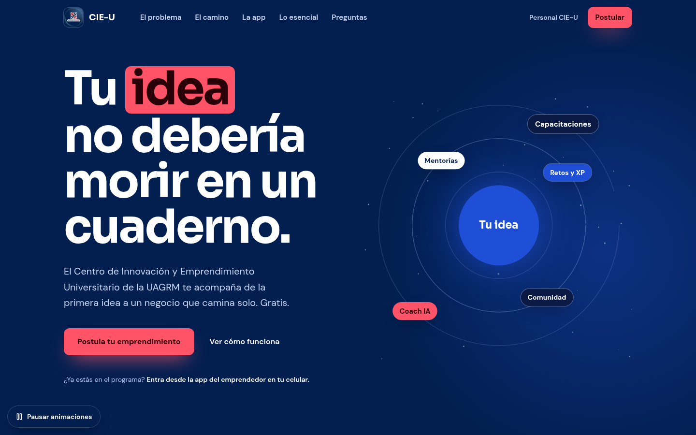
Nota. Página pública dirigida a estudiantes. «Personal CIE-U» lleva al inicio de sesión.
Panel web.
Figura 2
Inicio de sesión del panel web
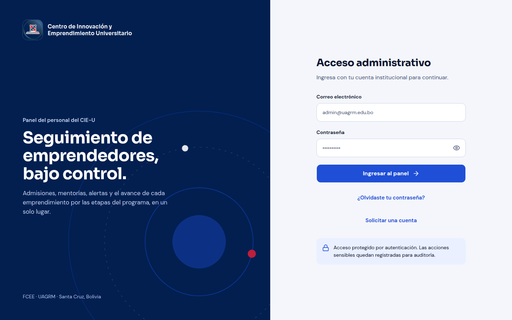
Nota. Pantalla «Panel del personal del CIE-U».
Aplicación móvil.
Figura 3
Inicio de sesión de la aplicación móvil con un mensaje de error
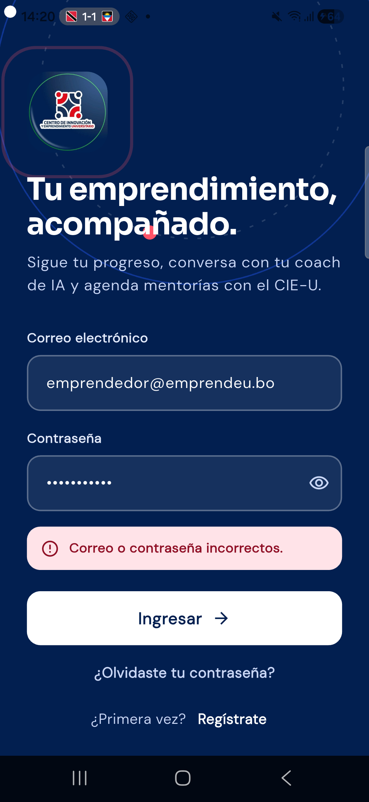
Nota. Se muestra el aviso «Correo o contraseña incorrectos.» cuando las credenciales no son válidas.
Validaciones: «Ingresa tu correo electrónico.», «Ingresa un correo válido.» e «Ingresa tu contraseña.». Tras varios intentos fallidos el sistema limita los intentos y pide esperar unos segundos. Si la cuenta está deshabilitada aparece «Tu cuenta está deshabilitada. Contacta al CIE-U.».
Crear cuenta. Desde «Solicitar acceso» en el inicio de sesión web, o «Regístrate» en la aplicación móvil, se completa «Nombre completo», «Correo electrónico», contraseña (mínimo 8 caracteres) y «Confirmar contraseña», y se selecciona «Crear cuenta». La cuenta creada es siempre de emprendedor; en el panel web no ingresa hasta que un administrador le asigne un rol de personal.
Figura 4
Formulario de registro web
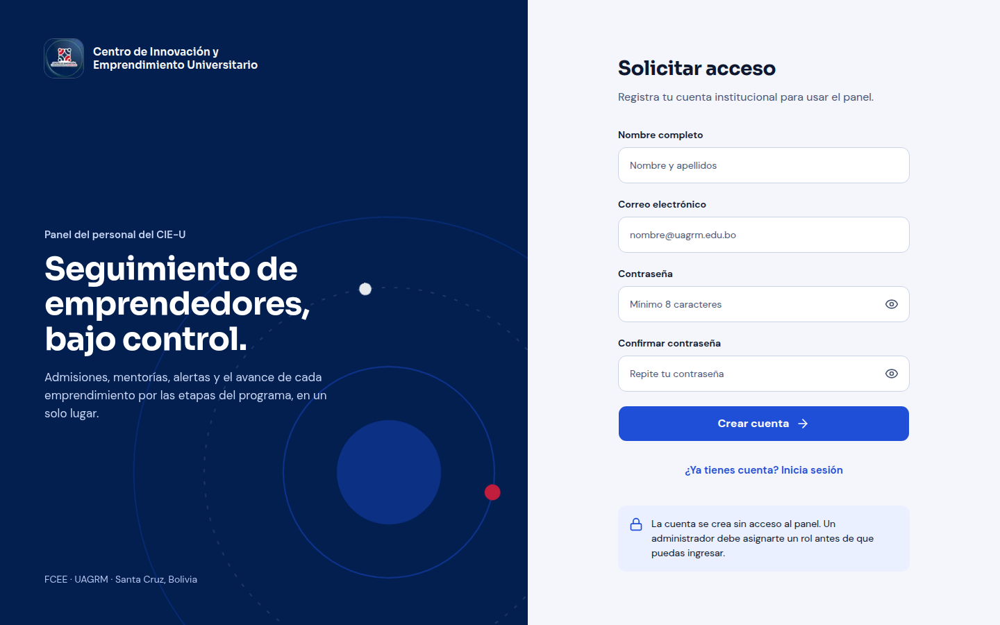
Nota. El registro crea una cuenta de emprendedor.
Postular un emprendimiento. La página pública «Postula tu emprendimiento» (Figura 5) no requiere cuenta.
Figura 5
Formulario de postulación
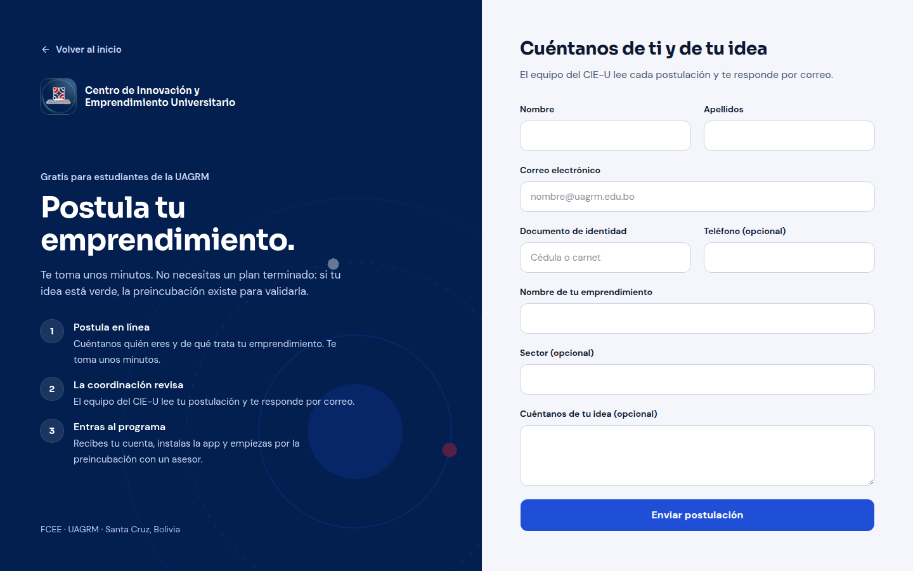
Nota. Gratis para estudiantes de la UAGRM.
Si ya existe una postulación pendiente con el mismo correo aparece «Ya tenemos una postulación pendiente con ese correo.».
Figura 6
Solicitud del código de recuperación
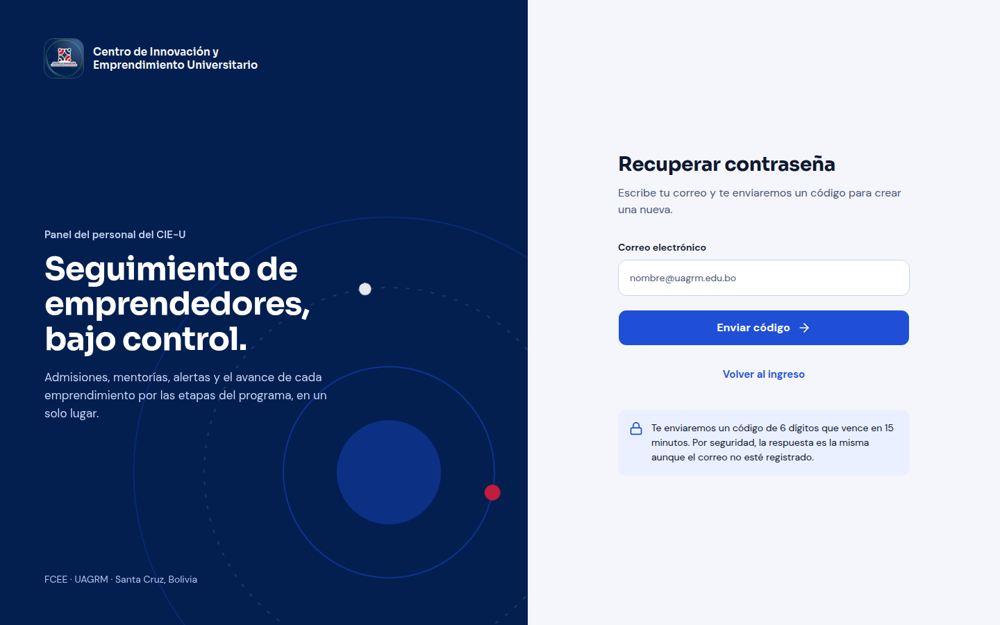
Nota. Pantalla «Recupera tu contraseña».
Si el código es incorrecto o venció: «El código no es válido o ya venció. Pide uno nuevo.». Si el servicio de correo no está disponible: «No pudimos enviar el correo. Intenta de nuevo en unos minutos.».
Tras ingresar, el personal ve «Resumen» (Figura 7). La aplicación móvil abre «Inicio» (Figura 38).
En el panel web, el menú lateral agrupa las pantallas en Inicio, Programa, Acompañamiento y Configuración. En pantallas pequeñas el menú se abre como una hoja lateral. En la aplicación móvil, la barra inferior tiene cinco pestañas: Inicio, Camino, Mentorías, Coach y Perfil.
En el panel web, seleccionar «Cerrar sesión» al pie del menú lateral. En la aplicación móvil, abrir la pestaña «Perfil» y tocar «Cerrar sesión»; esta acción borra los datos locales de la sesión.
Ambas aplicaciones usan la identidad visual del CIE-U: fondo claro, azul marino para el menú y azul para los botones principales.
El menú lateral del panel web muestra solo las secciones permitidas. Al pie aparece la tarjeta de la persona con su rol y el acceso a «Mi cuenta». «Alertas» muestra una insignia con el número de alertas abiertas.
Tabla 3
Menú del panel web
| Grupo | Opciones |
|---|---|
| Inicio | Resumen, Indicadores, Reportes |
| Programa | Admisiones, Emprendedores, Emprendimientos, Necesidades, Alertas, Salud |
| Acompañamiento | Asignaciones, Mi disponibilidad, Sesiones, Capacitaciones |
| Configuración | Usuarios, Roles y permisos, Parámetros, Catálogos y XP, Base de conocimiento, Auditoría |
La aplicación móvil dispone de una barra inferior con cinco pestañas. Tocar de nuevo la pestaña activa devuelve a su pantalla inicial. Las pantallas secundarias tienen una flecha de regreso en la esquina superior izquierda.
Los botones azules ejecutan la acción principal («Nuevo usuario», «Guardar cambios»). Los filtros aparecen como botones tipo píldora («Todos», «Activo», «Pausado»). Los interruptores habilitan o deshabilitan una opción. Las acciones de creación y edición se abren en hojas laterales.
Los campos obligatorios se validan antes de enviar y el mensaje aparece bajo el campo. Cuando el sistema crea una cuenta de emprendedor o de personal muestra una «Contraseña temporal» una sola vez, con un botón para copiarla.
Las confirmaciones aparecen como avisos breves, por ejemplo «Emprendimiento creado: …», casi siempre seguidos de «Registrado en auditoría.». En la aplicación móvil, la campana de «Inicio» abre la bandeja de «Notificaciones», con los avisos de mentorías, compromisos, capacitaciones y logros.
Descripción. Muestra el estado del programa: emprendimientos activos, alertas abiertas, usuarios por rol, estado de los servicios y actividad reciente. Roles: quienes tienen consulta de Indicadores y reportes (administrador y coordinador). Acceso: menú Inicio → «Resumen».
Figura 7
Pantalla Resumen del administrador
Nota. Incluye accesos rápidos a alertas y emprendimientos.
Restricciones. Un asesor no tiene este permiso en la configuración inicial y ve «Sin acceso a el resumen» (Figura 8). Para trabajar puede usar otra opción del menú.
Figura 8
Pantalla Resumen vista por un asesor
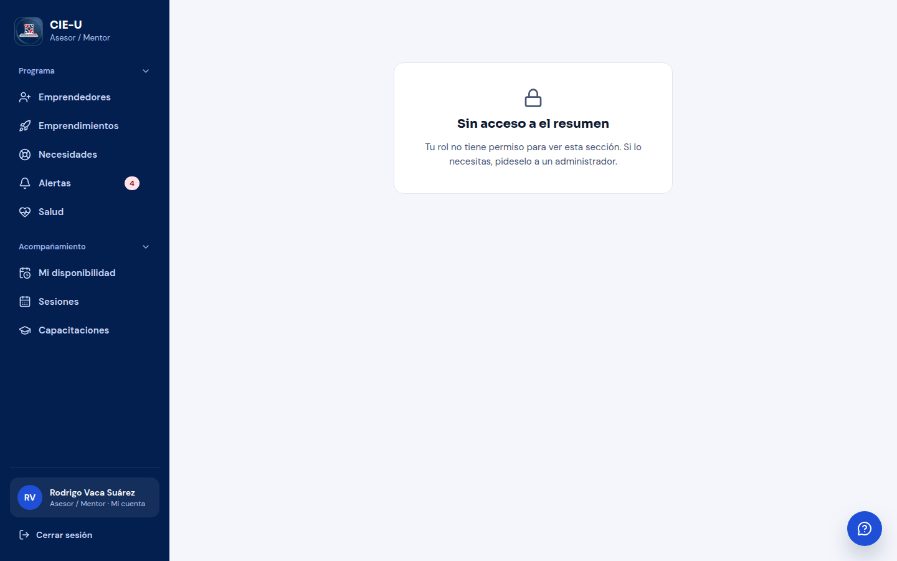
Nota. Ejemplo de mensaje de acceso restringido junto al tutorial inicial.
Descripción. Presenta cifras del programa: emprendimientos por etapa, sesiones realizadas, avances, compromisos vencidos y alertas por tipo. Acceso: «Indicadores».
Figura 9
Indicadores del programa
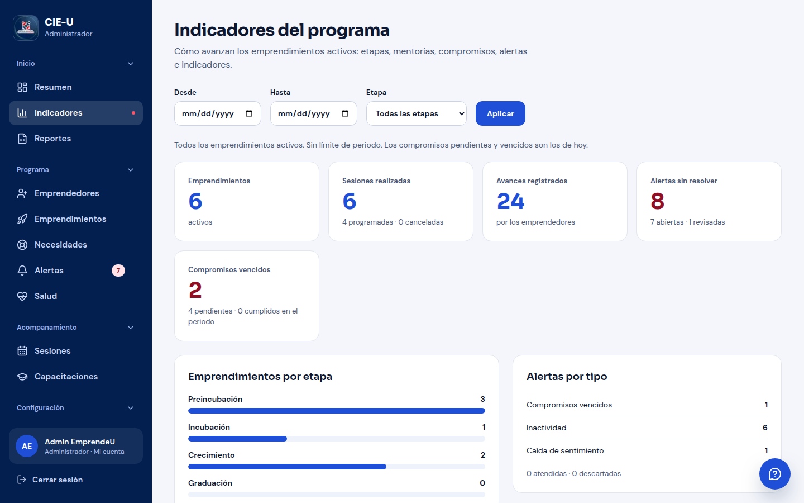
Nota. Los filtros se aplican a todas las tarjetas y tablas.
Descripción. Permite revisar y descargar cuatro reportes: «Resumen por emprendimiento», «Sesiones de mentoría», «Alertas» e «Indicadores».
Figura 10
Reportes con vista previa
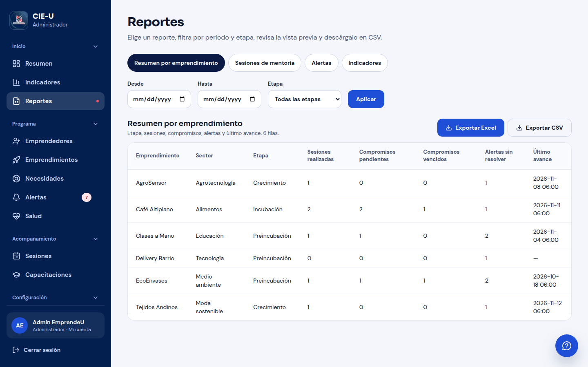
Nota. Las descargas conservan los filtros aplicados.
Descripción. Lista las postulaciones recibidas desde la web pública. Roles: coordinación (permiso de registro de emprendedores).
Figura 11
Lista de admisiones
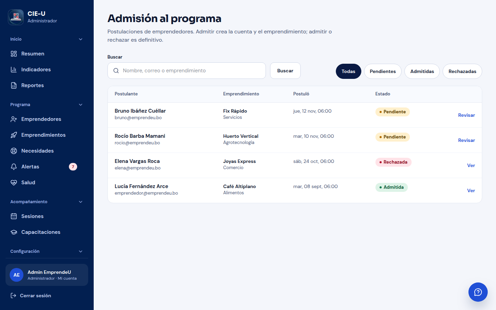
Nota. Los estados son pendiente, admitida y rechazada.
Figura 12
Detalle de una postulación
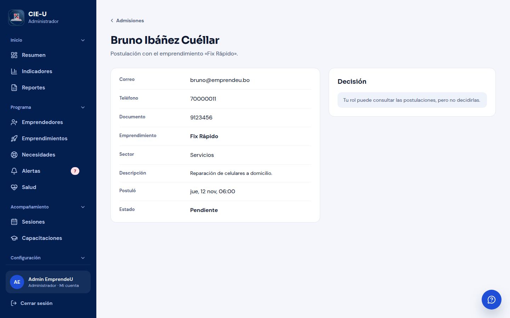
Nota. Quien no puede decidir ve: «Tu rol puede consultar las postulaciones, pero no decidirlas.».
Restricciones. Admitir o rechazar es definitivo. Errores frecuentes: «Falta el documento de identidad: no se puede admitir.», «Ese correo ya tiene una cuenta: no se puede crear otra.» y «Ese documento ya pertenece a otro emprendedor.».
Descripción. Lista a las personas emprendedoras. El documento de identidad no puede repetirse.
Figura 13
Lista de emprendedores
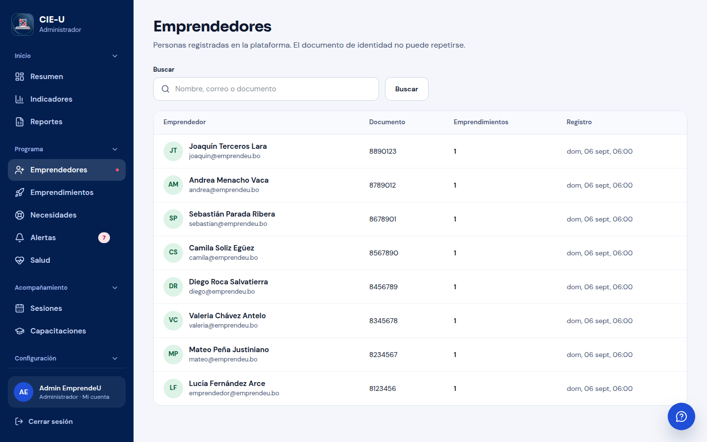
Nota. Muestra documento, cantidad de emprendimientos y fecha de registro.
Errores. «Ese documento ya está registrado.», «Ese correo ya tiene cuenta.».
Descripción. Gestiona los emprendimientos, su equipo y su etapa. Roles: consulta con permiso de emprendedores; crear (registro); editar (modificación); cambiar etapa (modificación de seguimiento).
Figura 14
Lista de emprendimientos
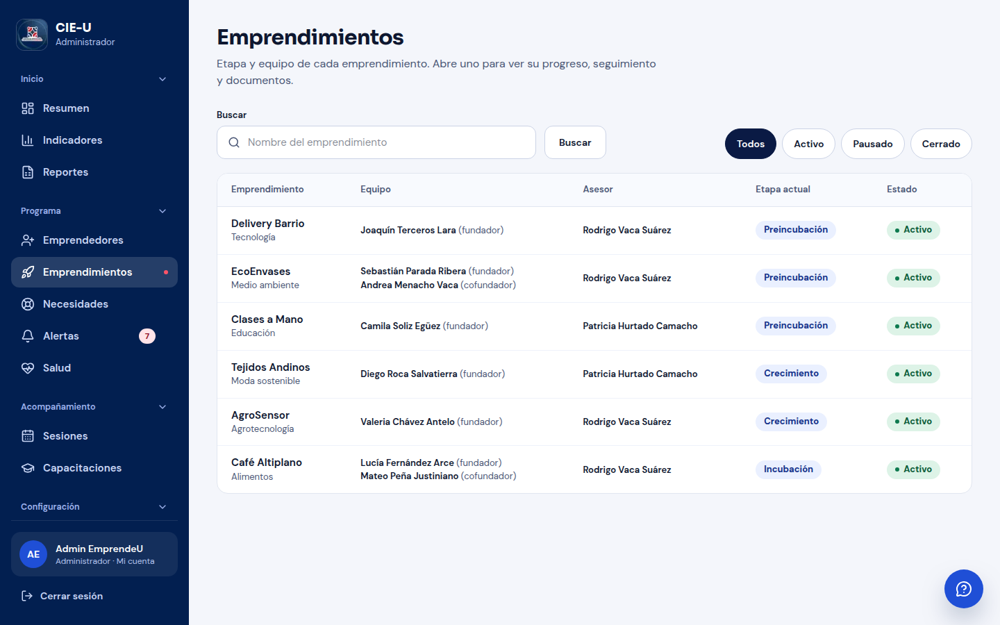
Nota. Cada fila muestra equipo, asesor, etapa y estado.
Restricciones. La etapa solo avanza a la siguiente etapa activa. Mensajes: «Agrega al menos un emprendedor al equipo.», «Un emprendedor aparece dos veces en el equipo.», «Esa etapa está inactiva.».
Al abrir un emprendimiento aparece su ficha con el trayecto de etapas y cinco pestañas.
Figura 15
Pestaña Progreso
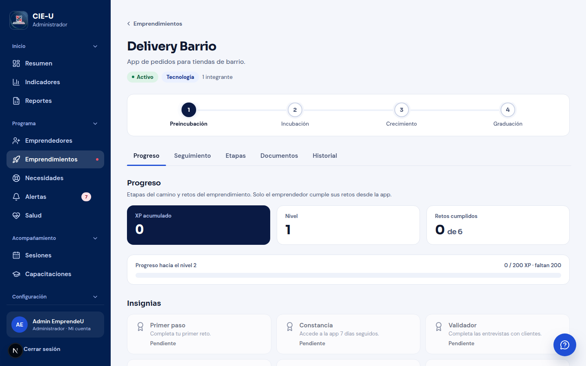
Nota. El XP lo obtiene el emprendedor al cumplir retos en la aplicación móvil.
Figura 16
Pestaña Seguimiento
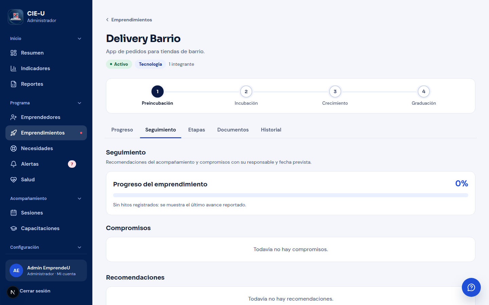
Nota. Compromisos y recomendaciones del emprendimiento.
Figura 17
Pestaña Etapas
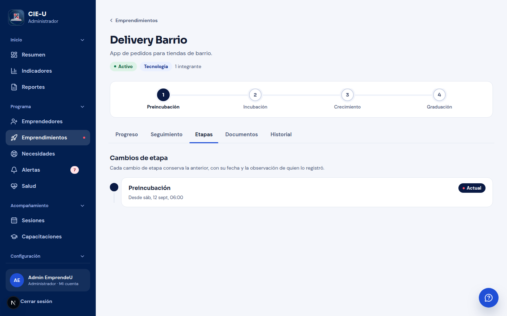
Nota. Cada cambio conserva la etapa anterior.
Figura 18
Pestaña Documentos
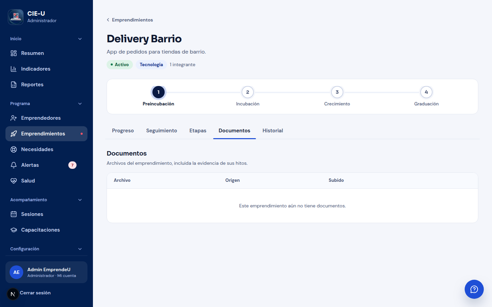
Nota. Se distinguen documentos generales y evidencia de hito.
Figura 19
Pestaña Historial
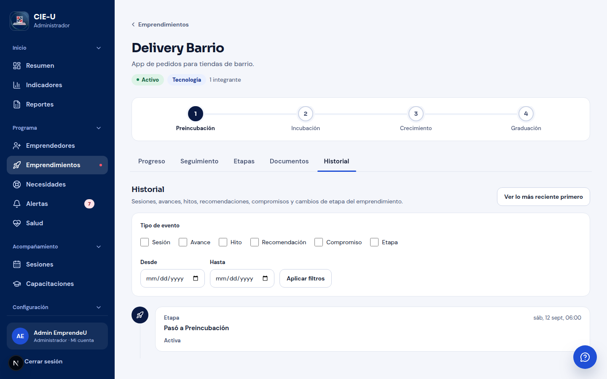
Nota. Se puede ordenar del más reciente al más antiguo.
Errores de documentos. «Elige un archivo.», «Formato no permitido. Usa: …», «El archivo supera N MB.».
Descripción. Muestra las necesidades y dificultades que reportan los emprendedores. Las abiertas aparecen primero.
Figura 20
Necesidades y dificultades
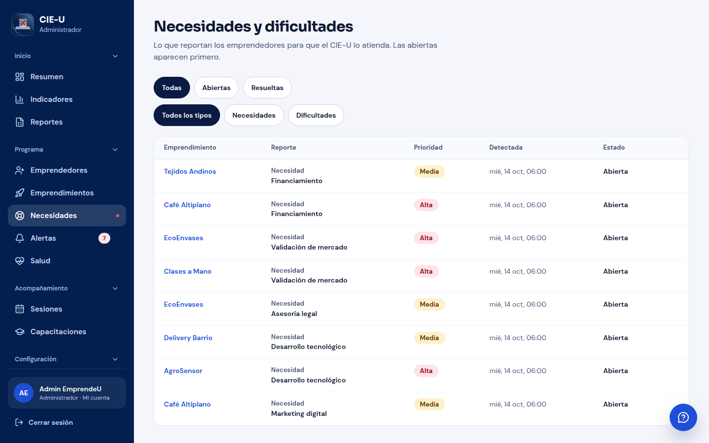
Nota. La prioridad se muestra como Alta, Media o Baja.
Descripción. Lista los riesgos detectados: inactividad, caída de sentimiento y compromiso vencido. Una alerta no cambia el estado del emprendimiento.
Figura 21
Lista de alertas
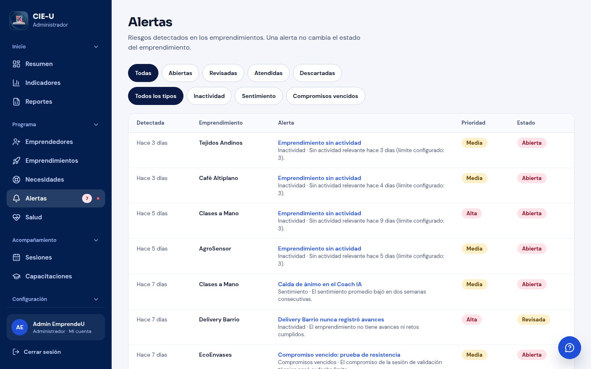
Nota. La cifra del menú indica las alertas abiertas.
Figura 22
Detalle de una alerta
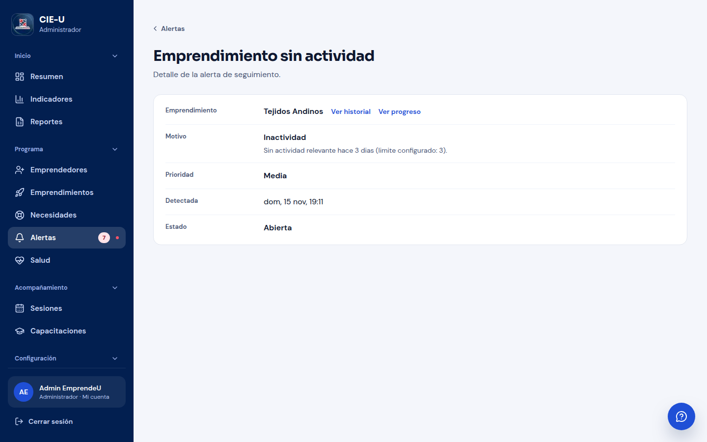
Nota. Incluye enlaces al historial y al progreso del emprendimiento.
Una alerta ya cerrada no admite nuevos cambios. El asesor ve solo las alertas de sus emprendimientos asignados.
Descripción. Ordena los emprendimientos del más urgente al que mejor va. El puntaje combina alertas, compromisos vencidos, inactividad, tiempo en la etapa y ánimo en el coach. Verde equivale a 70 o más, ámbar a 40–69 y rojo a menos de 40.
Figura 23
Salud de los emprendimientos
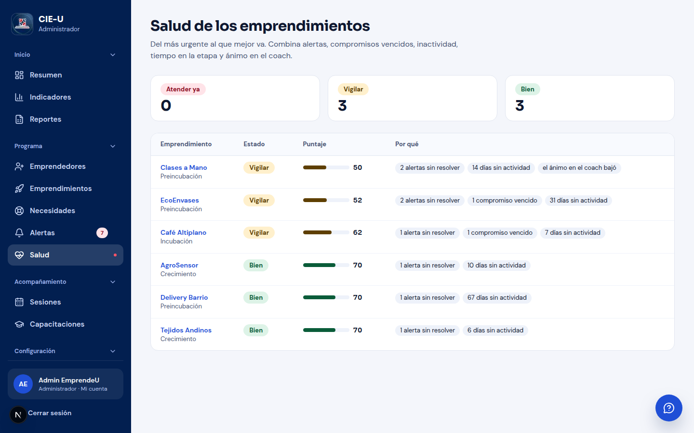
Nota. La columna «Por qué» explica el puntaje.
Descripción. Habilita asesores y los asigna a emprendimientos. Roles: coordinación (permiso de registro de asesorías); el asesor solo consulta.
Figura 24
Asignaciones
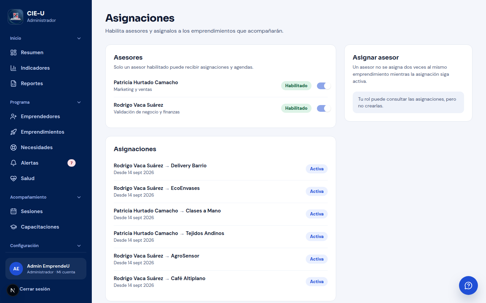
Nota. No se permite duplicar una asignación activa.
Descripción. El asesor define los horarios en los que atiende mentorías, en bloques de 60 minutos. Los emprendedores asignados agendan dentro de ellos.
Figura 25
Disponibilidad del asesor
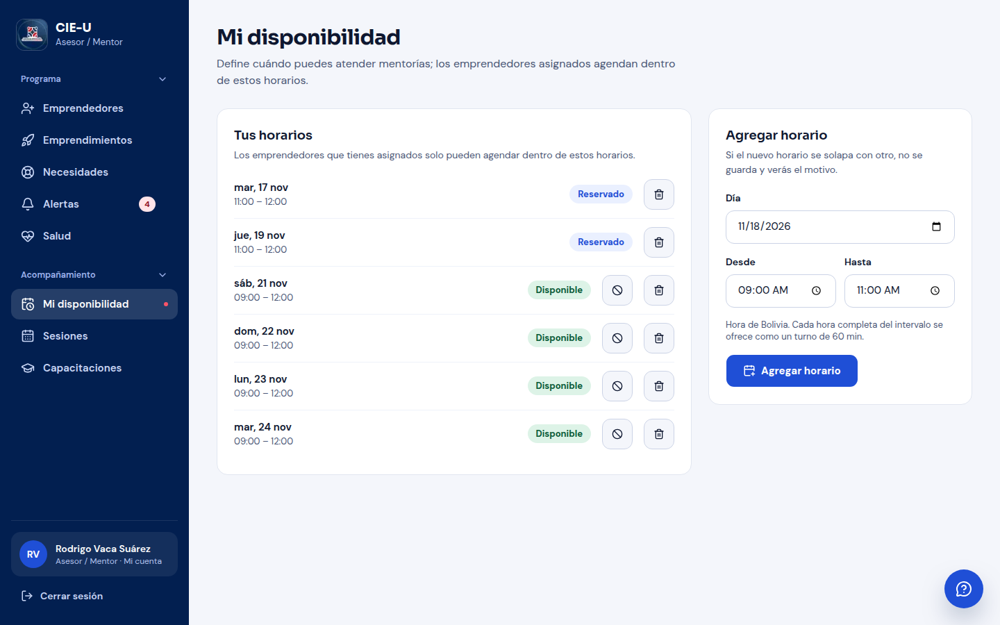
Nota. Los horarios reservados no pueden eliminarse.
Validaciones. «Elige una fecha.», «Elige una hora.», «La hora de fin debe ser posterior al inicio.». Los horarios no pueden superponerse.
Descripción. Lista las mentorías por estado (Programadas, Realizadas, Canceladas) y periodo, y permite registrar lo ocurrido. El asesor ve sus sesiones; el resto del personal ve todas.
Figura 26
Sesiones de mentoría
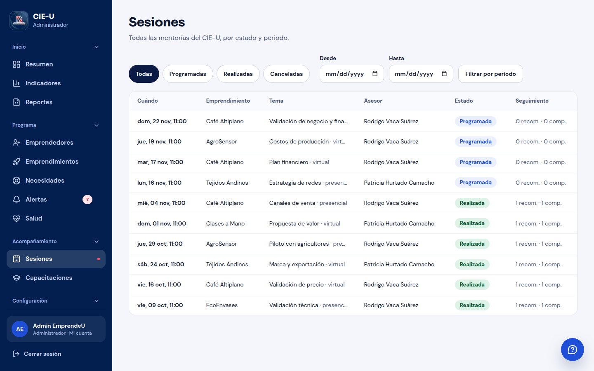
Nota. Se puede filtrar por estado y por fechas.
Restricciones. Una sesión realizada no puede tener fecha futura. El asesor solo registra en emprendimientos que tiene asignados.
Descripción. Gestiona talleres y charlas, sus participantes y la asistencia.
Figura 27
Lista de capacitaciones
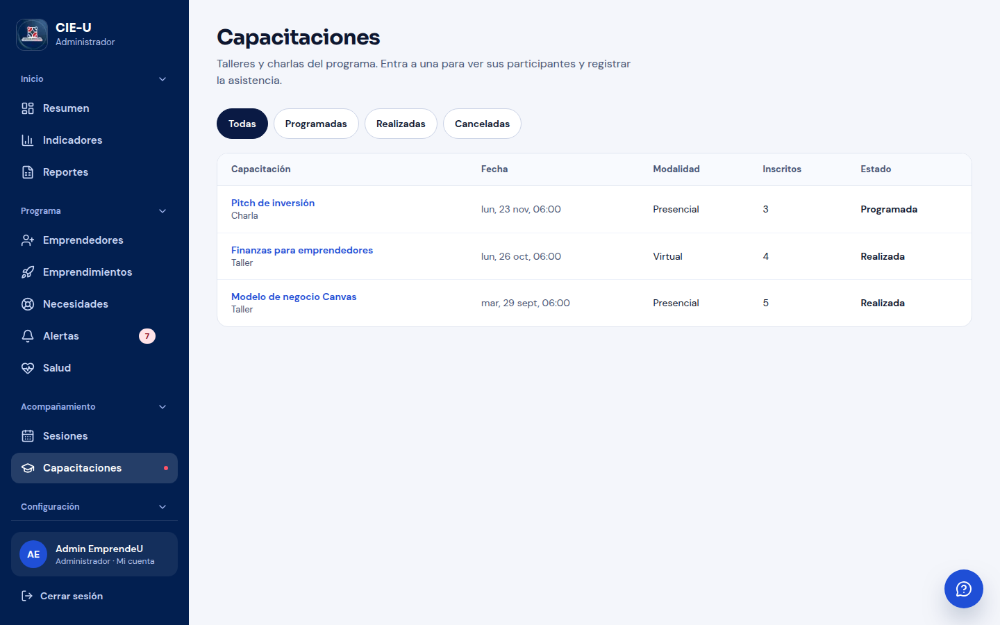
Nota. Muestra fecha, modalidad, estado e inscritos.
Figura 28
Detalle de una capacitación
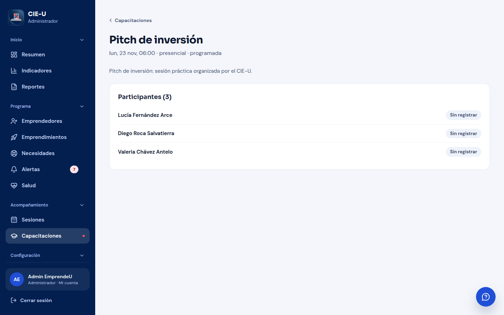
Nota. La asistencia se registra por participante.
Una capacitación cancelada ya no admite participantes, y un emprendedor no puede repetirse en la misma capacitación.
Descripción. Gestiona las cuentas de la plataforma. Roles: administrador.
Figura 29
Lista de usuarios
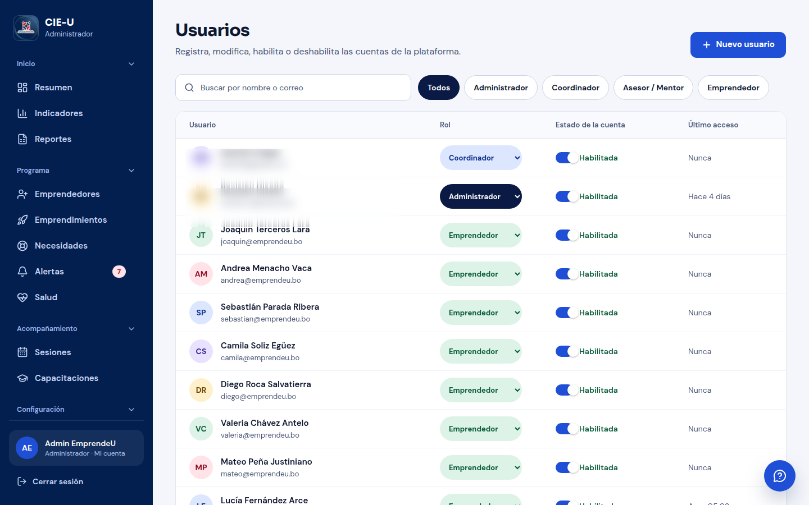
Nota. Se difuminaron datos personales no pertenecientes a la demostración.
Validaciones. «Ingresa nombre y apellido.», «Ya existe una cuenta con ese correo.».
Descripción. Muestra la matriz de siete módulos por cuatro acciones y permite editarla (permiso administrativo de usuarios).
Figura 30
Roles y permisos
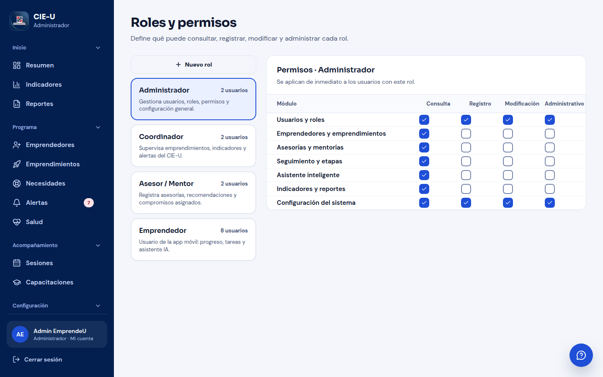
Nota. Los cuatro roles del sistema no pueden renombrarse ni eliminarse.
Descripción. Reglas que usa el sistema para detectar inactividad y riesgo de deserción: «Periodo de inactividad», «Periodos consecutivos para activar», «Caída del índice de sentimiento», «Plazo de los compromisos» e «Incumplimiento de compromisos», con los interruptores «Notificar al asesor asignado», «Notificar al Coordinador del CIE-U» y «Alertas activas».
Figura 31
Parámetros de seguimiento
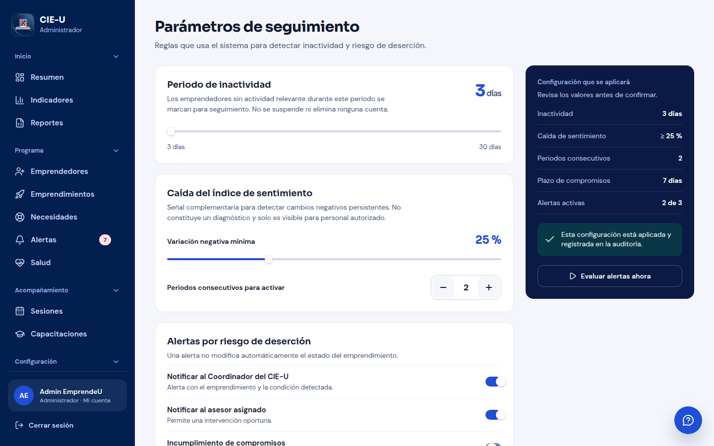
Nota. El botón «Evaluar alertas ahora» requiere permiso administrativo.
Descripción. Administra las etapas del ciclo de vida, los retos con sus recompensas de XP y las insignias, en tres pestañas: Etapas, Retos e Insignias. Activar o desactivar una etapa y editar el XP de un reto requiere permiso de modificación de configuración.
Figura 32
Catálogos y gamificación
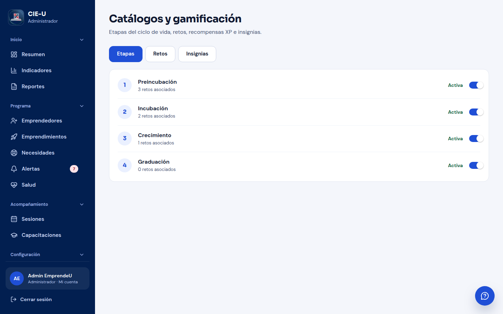
Nota. Cada etapa indica cuántos retos tiene asociados.
Descripción. Documentos con los que responde el coach de IA. Solo los activos se utilizan.
Figura 33
Base de conocimiento
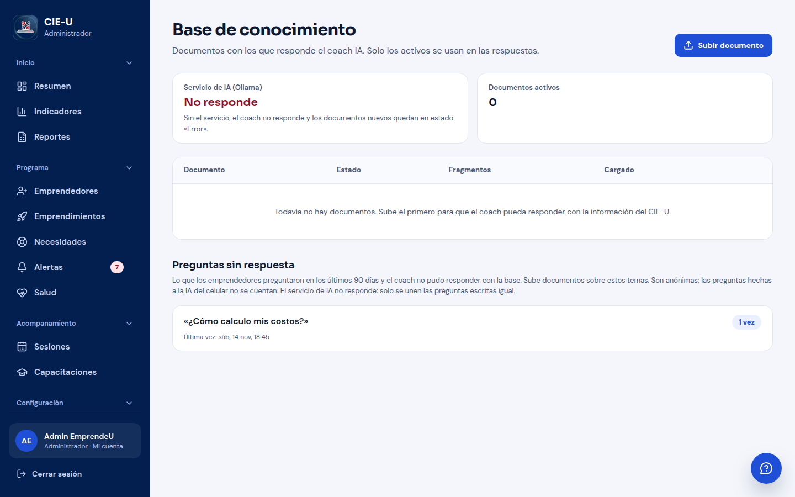
Nota. En el momento de la captura el servicio de IA aparecía como «No responde».
La sección «Preguntas sin respuesta» lista, de forma anónima, las consultas que el coach no pudo resolver.
Descripción. Registro de acciones sensibles: hora, actor, acción y resultado (Exitoso o Rechazado).
Figura 34
Auditoría
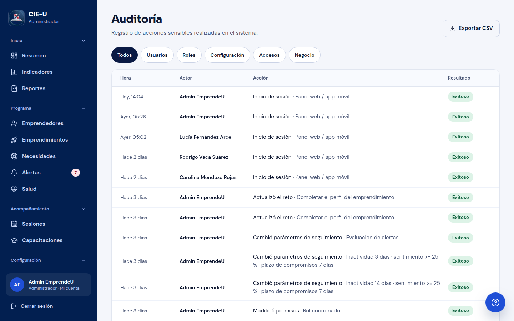
Nota. El actor aparece como «Sistema» cuando la acción es automática.
Descripción. Muestra los datos de la sesión y permite cambiar la contraseña. Está disponible para todo el personal.
Figura 35
Mi cuenta
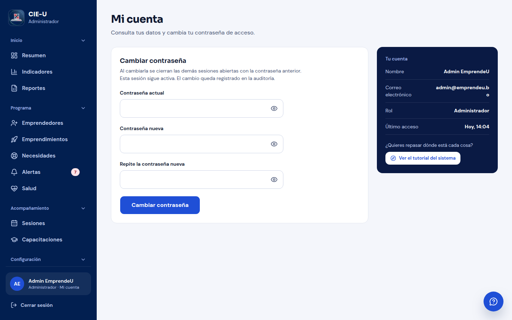
Nota. Incluye el botón «Ver el tutorial del sistema».
Validaciones. «La contraseña actual no es correcta.», «La contraseña nueva debe ser distinta de la actual.», «Las contraseñas no coinciden.».
Tutorial guiado. Aparece en el primer ingreso (Figura 36) con los botones «Saltar tutorial» y «Comenzar recorrido». Recorre el menú según los permisos de la persona. Puede repetirse desde «Mi cuenta» con «Ver el tutorial del sistema».
Figura 36
Tutorial del primer ingreso
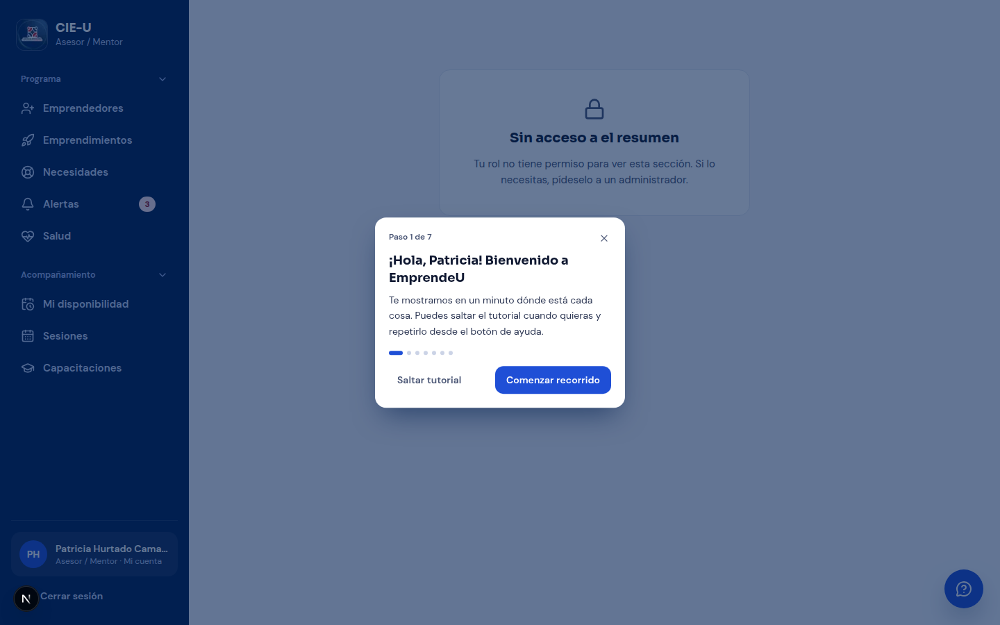
Nota. El tutorial se adapta al rol de quien ingresa.
Asistente de ayuda. El botón circular de la esquina inferior derecha abre el «Asistente de ayuda». Se puede escribir una pregunta («¿Cómo registro una sesión?») o elegir una sugerencia. Cuando la IA no está disponible responde con una guía rápida y lo indica: «Respuesta de la guía rápida (IA no disponible ahora).».
Figura 37
Asistente de ayuda
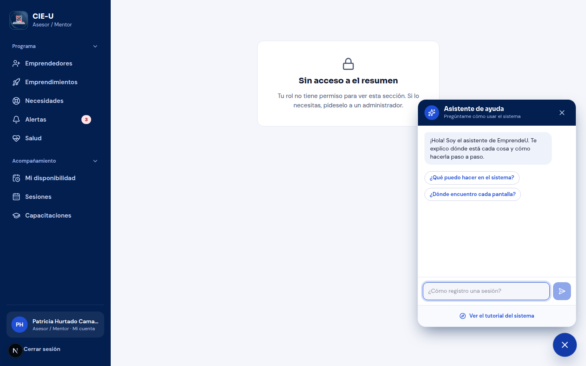
Nota. Las sugerencias cambian según la pantalla.
Roles: emprendedor. Muestra el saludo, el estado de conexión («En línea» o «Sin conexión»), la campana de notificaciones, el nivel y el XP, la etapa, el «SIGUIENTE RETO», los «Compromisos pendientes» y «Mis avances». Si no hay emprendimiento registrado, aparece «Registra tu emprendimiento».
Figura 38
Pantalla Inicio de la aplicación
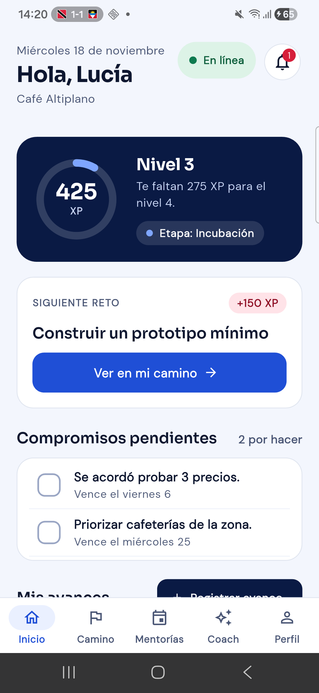
Nota. Resumen del progreso del emprendimiento.
Muestra el mapa de retos del emprendimiento por etapa, con estados Cumplido, En curso y Bloqueado, y los puntos de XP.
Figura 39
Pestaña Camino
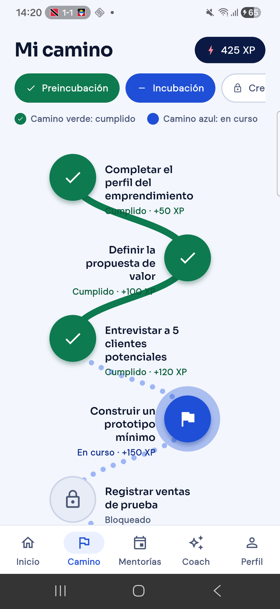
Nota. El reto en curso aparece destacado con una bandera.
Un reto bloqueado muestra «Completa el reto anterior para desbloquearlo.». El detalle de XP e insignias está en «Ver experiencia e insignias» del Perfil.
Figura 40
Pestaña Mentorías
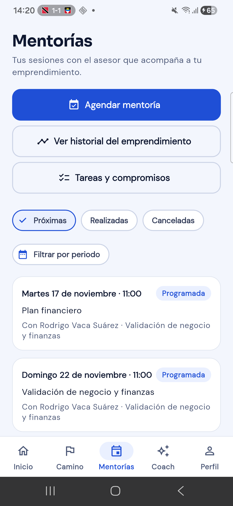
Nota. Las mentorías próximas aparecen con estado «Programada».
Figura 41
Agendar una mentoría
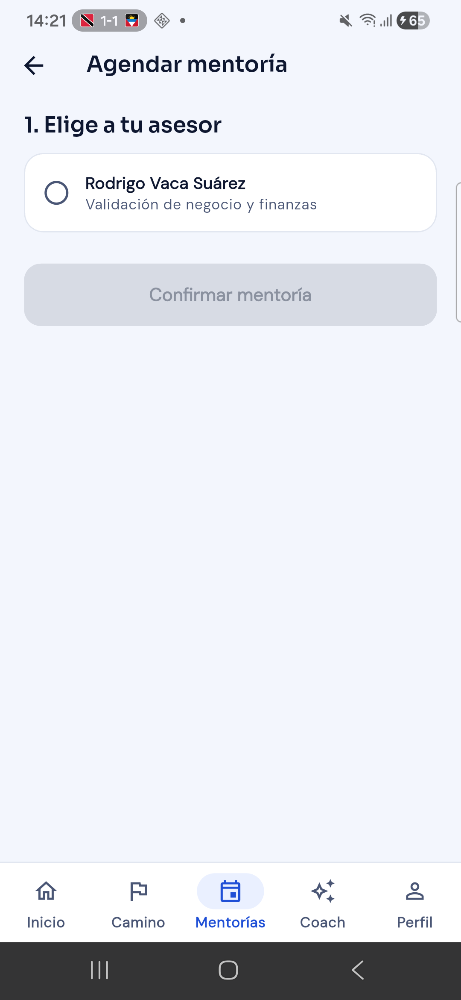
Nota. Solo se puede agendar con asesores asignados.
Figura 42
Historial del emprendimiento
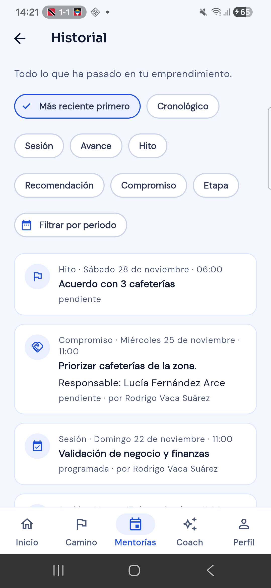
Nota. Se puede ordenar y filtrar por tipo de evento.
Figura 43
Tareas y compromisos
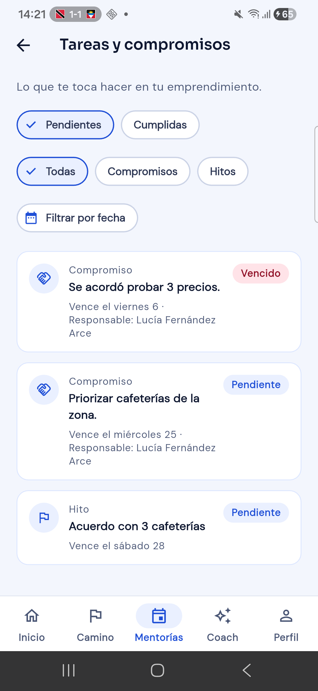
Nota. Los compromisos vencidos se marcan en rojo.
Si no hay asesor asignado: «Todavía no tienes un asesor asignado. El CIE-U te asignará uno cuando tu emprendimiento esté listo.». Si el horario se ocupó: «Ese horario ya no está disponible. Elige otro.».
Figura 44
Pestaña Coach IA
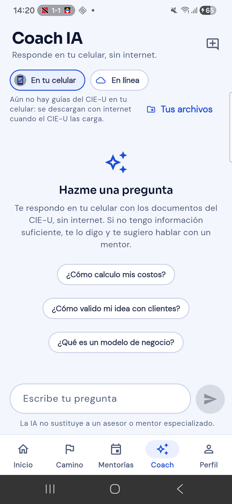
Nota. Pantalla del modo «En tu celular».
El coach muestra siempre el aviso «La IA no sustituye a un asesor o mentor especializado.». Longitud máxima del mensaje: 2000 caracteres.
Reúne los datos de la persona, «Mi emprendimiento», el XP, las insignias y los accesos a otras funciones.
Figura 45
Pestaña Perfil
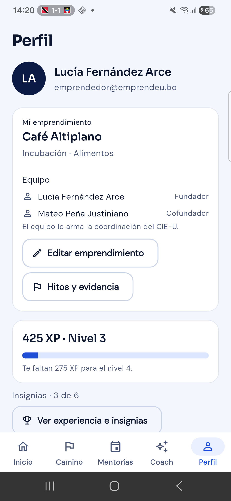
Nota. Incluye el emprendimiento, el equipo y el XP.
Figura 46
Opciones del Perfil
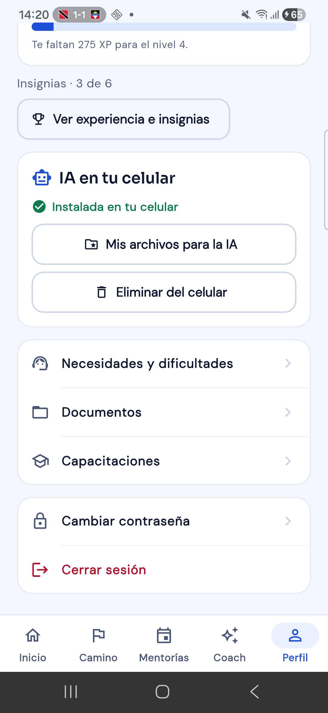
Nota. Sección «IA en tu celular» y accesos directos.
Figura 47
Cambiar contraseña
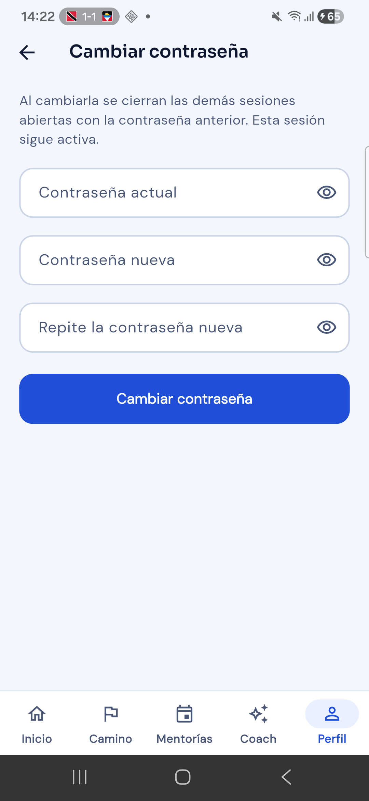
Nota. La sesión actual permanece activa.
Figura 48
Necesidades y dificultades
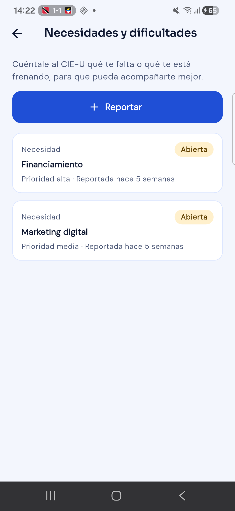
Nota. Los reportes abiertos se muestran con su prioridad.
No se puede repetir una necesidad abierta: «Ya reportaste esa necesidad y sigue abierta. Cuando se resuelva podrás reportarla otra vez.».
Figura 49
Documentos del emprendimiento
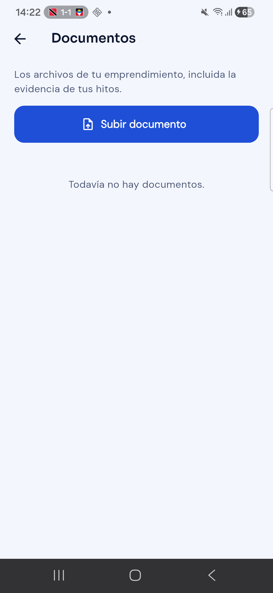
Nota. Incluye la evidencia de los hitos.
Errores: «Ese tipo de archivo no es válido.», «El archivo es demasiado grande.».
Perfil → «Capacitaciones». Lista los talleres y charlas. «Inscribirme» inscribe en las programadas; las etiquetas muestran «Inscrito», «Asististe» o «No asististe».
Figura 50
Capacitaciones
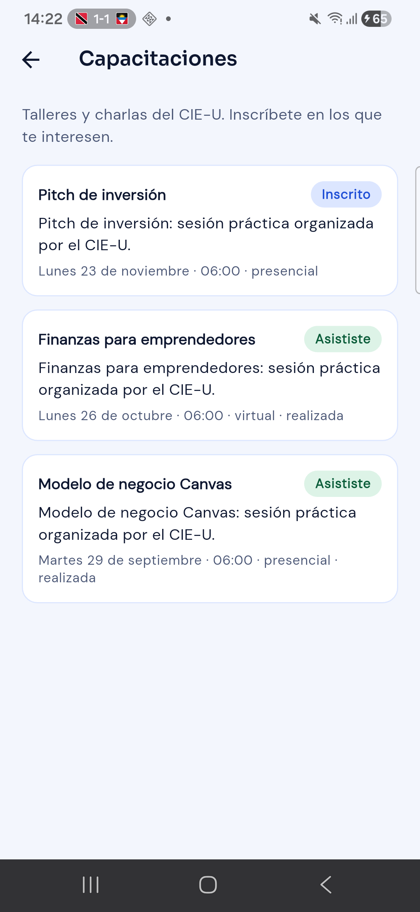
Nota. «Cargar más» muestra más resultados.
La campana de «Inicio» abre la bandeja «Notificaciones» con avisos de mentorías, compromisos, capacitaciones, etapa e insignias. «Marcar todo leído» limpia los avisos; tocar un aviso abre su pantalla.
Figura 51
Notificaciones
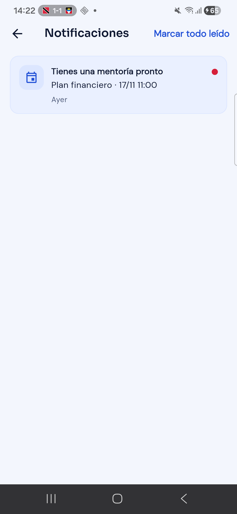
Nota. El punto rojo indica un aviso sin leer.
Los compromisos marcados y los avances registrados sin internet se guardan en el teléfono y se envían al recuperar la red («Sincronizando N registro(s)…», «Todo sincronizado.»). Las demás funciones requieren conexión.
Resultado: el emprendimiento queda con equipo, asesor, mentorías y compromisos, y su historial lo refleja.
Véase la sección 3.4.
Tabla 4
Mensajes informativos frecuentes
| Mensaje | Dónde aparece |
|---|---|
| Contraseña actualizada. Ya puedes iniciar sesión. | Tras restablecer la contraseña |
| Recibimos tu postulación. El equipo del CIE-U la evaluará… | Tras postular |
| Reporte enviado. El CIE-U lo podrá ver. | Aplicación, necesidades |
| Cambios guardados. | Aplicación, editar emprendimiento |
| Mentoría cancelada. | Aplicación, mentorías |
| Todo sincronizado. | Aplicación, sincronización |
Tabla 5
Errores de validación frecuentes
| Mensaje | Causa | Solución |
|---|---|---|
| Ingresa un correo válido. | Formato de correo incorrecto | Escribir un correo completo |
| Usa al menos 8 caracteres. | Contraseña corta | Usar 8 caracteres o más |
| Las contraseñas no coinciden. | La confirmación difiere | Repetir la contraseña igual |
| El código tiene 6 dígitos. | Código incompleto | Escribir los 6 dígitos recibidos |
| Ingresa nombre y apellido. | Nombre de una sola palabra | Escribir nombre y apellido |
| Ese documento ya está registrado. | Documento duplicado | Verificar si el emprendedor ya existe |
Tabla 6
Problemas de acceso
| Mensaje | Causa | Solución |
|---|---|---|
| Correo o contraseña incorrectos. | Datos erróneos | Revisar; usar la recuperación de contraseña |
| Tu cuenta está deshabilitada. Contacta al CIE-U. | Cuenta deshabilitada | Contactar a un administrador |
| Esta cuenta es de emprendedor: usa la app móvil del CIE-U. | Emprendedor en el panel web | Usar la aplicación móvil |
| Esta cuenta es del panel web del CIE-U. Esta app es para emprendedores. | Personal en la aplicación | Usar el panel web |
| Tu sesión venció. Ingresa de nuevo. | La sesión dura 60 minutos | Ingresar nuevamente |
| Sin acceso a … | Falta el permiso | Pedirlo a un administrador |
| Demasiados intentos. Intenta de nuevo en N min. | Límite de intentos | Esperar el tiempo indicado |
Ante un error persistente, anote el mensaje exacto y la pantalla donde apareció y comuníquese con la coordinación del CIE-U.
Registre avances y compromisos con frecuencia: el sistema usa esa actividad para calcular la salud del emprendimiento y generar alertas por inactividad.
Suba solo documentos del emprendimiento. Los archivos que se agregan al coach desde «Mis archivos para la IA» se analizan únicamente en el teléfono y se borran al cerrar sesión. Los datos de postulantes y emprendedores deben tratarse con confidencialidad.
Cierre la sesión en equipos compartidos. Al cambiar la contraseña, las demás sesiones se cierran automáticamente. Las acciones sensibles del personal quedan registradas en «Auditoría».
Tabla 7
Glosario
| Término | Definición |
|---|---|
| CIE-U | Centro de Innovación y Emprendimiento Universitario. |
| Emprendimiento | Proyecto de negocio acompañado por el programa. |
| Etapa | Fase del programa: Preincubación, Incubación, Crecimiento o Graduación. |
| Reto | Tarea de una etapa que otorga XP al cumplirse. |
| XP | Puntos de experiencia que acumula el emprendedor. |
| Insignia | Reconocimiento por logros del programa. |
| Compromiso | Tarea acordada en una mentoría, con responsable y fecha. |
| Recomendación | Sugerencia que registra el asesor tras una sesión. |
| Hito | Logro del emprendimiento que se registra, con evidencia opcional. |
| Alerta | Aviso de riesgo detectado por el sistema. |
| Coach IA | Asistente de inteligencia artificial que responde con la base de conocimiento del CIE-U. |
| Contraseña temporal | Clave inicial mostrada una sola vez al crear una cuenta. |
| Auditoría | Registro de las acciones sensibles realizadas. |
¿Puede un emprendedor entrar al panel web? No. Debe usar la aplicación móvil.
¿Quién crea las cuentas del personal? Un administrador, desde «Usuarios».
¿Qué pasa si olvido mi contraseña? Use «¿Olvidaste tu contraseña?» y el código de 6 dígitos enviado por correo; vence en 15 minutos.
¿Puedo usar el coach sin internet? Sí, si descargó la IA desde Perfil → «IA en tu celular». Los archivos propios no salen del teléfono.
¿Por qué no puedo agendar una mentoría? Porque no tiene asesor asignado o el asesor no tiene horarios disponibles.
¿Puedo deshacer la admisión de una postulación? No, la decisión es definitiva.
¿Qué formatos de reporte existen? CSV y Excel para los reportes; CSV para la auditoría.
¿Qué ocurre si registro un avance sin conexión? Queda guardado en el teléfono con la etiqueta «Pendiente de sincronizar» y se envía al volver la red.
Este manual se basa en la inspección directa del sistema y no cita fuentes externas. Su formato adapta las pautas de presentación del siguiente documento:
American Psychological Association. (2020). Publication manual of the American Psychological Association (7.ª ed.). American Psychological Association.
Figura 52
Resumen del coordinador
Nota. Vista inicial con el rol Coordinador.
Figura 53
Alertas vistas por un asesor
Nota. El asesor ve solo las alertas de sus emprendimientos.
Figura 54
Restablecimiento de contraseña
Nota. Pantalla para escribir el código y la nueva contraseña.
Tabla 8
Elementos pendientes de verificar
| Elemento | Estado |
|---|---|
| [CAPTURA PENDIENTE: registro y recuperación de contraseña en la aplicación móvil] | No capturadas; el procedimiento se basa en el código |
| [CAPTURA PENDIENTE: formularios en hoja lateral del panel web (nuevo usuario, nuevo emprendimiento, registrar sesión)] | No capturadas |
| [CAPTURA PENDIENTE: Coach IA con respuesta y fuentes] | No verificado: el servicio de IA estaba desactivado |
| Envío de correos de recuperación y notificaciones push | No verificado en el entorno de prueba |
| Exportaciones CSV/Excel | Presentes en la interfaz; descarga no abierta |
La lista completa está en el archivo pendientes_verificacion.md.